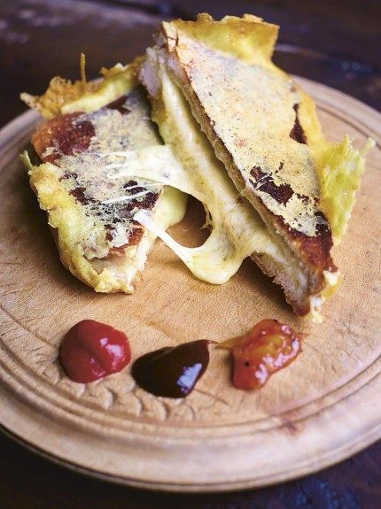

Pas het aantal sandwiches aan; de hoeveelheden hieronder worden automatisch herberekend.
Ingrediënten
- 2 dikke sneetjes wit brood, bijvoorbeeld een wit vloerbrood
- Zachte boter, genoeg om beide kanten van het brood mee te besmeren
- Een flinke hand geraspte kaas die goed smelt, zoals cheddar of Red Leicester
- Een beetje extra geraspte kaas voor het krokante kaaskorstje
- Een snufje cayennepeper
- Ketchup, worcestersaus of een andere saus, om erbij te serveren
Bereiding
- Besmeer beide kanten van het brood met boter. Rasp de kaas en verdeel die royaal over één sneetje. Druk de kaas licht aan en leg het andere sneetje erop.
- Verhit een koekenpan op laag tot middelhoog vuur. Bak de sandwich ongeveer 3 minuten per kant. Druk hem af en toe aan met een spatel, tot het brood goudbruin en krokant is en de kaas gesmolten is.
- Haal de sandwich kort uit de pan. Strooi de extra kaas in een cirkel ter grootte van de sandwich in de pan en leg de sandwich er meteen bovenop.
- Bak tot de kaas eronder gesmolten, bruisend en krokant is. Til de sandwich met een spatel uit de pan, zodat de krokante kaas als een randje om de sandwich hangt.
- Laat kort afkoelen zodat het kaaskorstje stevig wordt. Bestrooi evt met cayennepeper en serveer met de saus.
